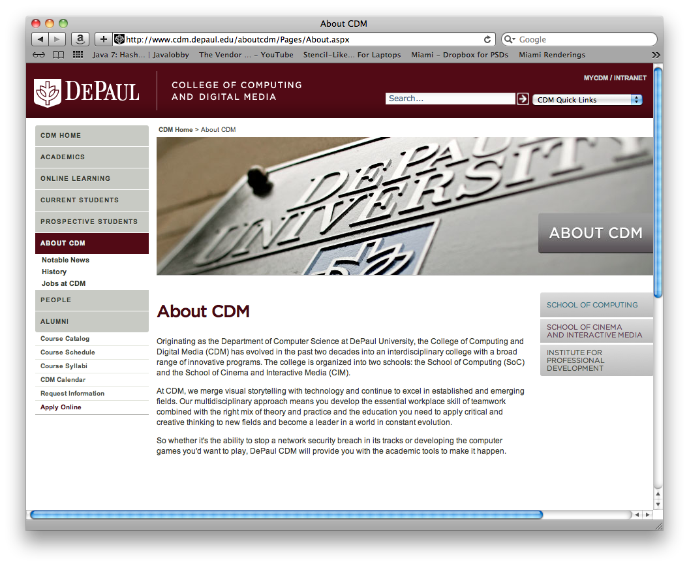

Welcome to the DePaul HTML5 Assignment. The goals of this assignment are to demonstrate the HTML5 and CSS3 skills you have aquired during this course.
For this assignment, we're going to build a web page and publish it onto the internet using Github's Pages feature. To complete the assignment you will be required to do the following:
Create a web page using HTML5/CSS3.
Publish it to Github.com.
Submit the link to your web page for grading.
Before we get into the nitty gritty of things, let's review how this assignment will be graded:
Item
Points
Correct use of HTML5/CSS3 elements
50
Correct use of HTML5/CSS3 APIs
30
Publishing the site to Github.com
10
Creativity
10
Let's take a look at the site we are going to be building:

To get started on the assignment, we'll need to install git and create a Github.com account.
Git is a distributed version control system (DVCS) that allows you to store and version source code effeciently. The use of a VCS is common in enterprise development, so you should become familiar with it. To install git:
On Windows:
Download the latest version of the git client here: http://git-scm.com/download/win and follow the related instructions.
To test your installation, from a command prompt, type the following and press enter:
$ git --version
If you see something along the lines of "git version 1.7.10.2"...you have successfully installed git.
On Mac:
Download the latest version of the git client here: http://git-scm.com/download/mac and follow the related instructions.
To test your installation, from a terminal window, type the following and press enter:
$ git --version
If you see something along the lines of "git version 1.7.10.2"... you have successfully installed git.
With git now installed, we need to create an account on Github.com. Github.com is a cloud service that allows you to publish code there for anyone to contribute to. We'll be using their Pages feature to publish our HTML5 website. To do that, go to Github.com and follow the instructions to sign up for an account.
With our Github.com account created, we need to create our repository. This is where our files will be placed while we develop them. We will also use the repository as a way to deploy our files.
To create a repository, you will go to Github.com and login. Once you are logged in, you will click the Create a new repo button. All that is required is that you provide a name for your repository.
To use your Github.com repository, you will need to clone it to your computer. To clone it, open a command prompt (Terminal on a Mac) and execute the following command:
Where <USERNAME> is your Github.com username and <REPONAME> is the name of the repository you created in the previous step.
With your repository cloned, we'll now create the branch that the code for your assignment will live in. To do this, we need to create an "orphaned" branch (a branch without a parent). To do this, from inside your repository, execute the following command:
$ git checkout --orphan gh-pages
This will create a new branch for your repository called gh-pages that Github.com will use to publish your website.
In the root of your repository, create a new file named index.html. Enter some HTML in the file and save it. With your new HTML file created, we need to commit it to your repository (save it) and then push it to Github.com so it is published.
To commit your file, execute the following command:
$ git commit -a -m "Initial commit"
The "Initial commit" is the comment describing your changes for this commit. We can now push (deploy) our site to Github.com with the command:
$ git push origin gh-pages
In the above command, we are telling git to push our changes to origin (the place we cloned our repository from) and we are specifying that we want to push the gh-pages branch. Once this has completed (you will be prompted for your Github.com username and password), Github will deploy the site to the url http://.github.io//. This may take up to 10 minutes to update.